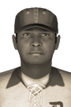

|
|
|  |
Clubhouse Leader, Milkman Smith, Works on Team Chemistry Sunday, May 22nd, 1898 Things just aren't right in Detroit. At least that is the word out of the team's clubhouse. The veterans have begun to notice too. "The season isn't a lost cause, but internally we have to start clicking better if we want everything to flow on the field how we'd like to," said Milkman Smith. Smith has been spotted by the media treating his teammates to dinner as recently as this week and has been showing up quite early to the ballpark on game day. "Yeah, I've been trying to beat the coaches to the field lately. I've been working with the newer guys trying to get the kinks out." Detroit Lions manager Enzo Kelly has taken notice as well. He mentioned that Smith has had the outfield trying to get a better feel for each other on fly balls that hit the gaps. He was quick to add, "this is definitely his doing. He hates to see losses show up in the standings. Every team needs take-charge guys like this who younger players look up to and older players respect." Smith has promised better results going forward. |


|